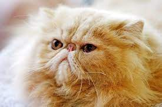
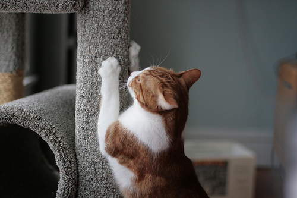

Mensen kunnen katten eng vinden om verschillende redenen. Allergieën voor kattenharen en speeksel kunnen fysiek ongemak veroorzaken. Traumatische ervaringen, zoals beten of krabben, kunnen angst opwekken. Bijgelovige overtuigingen, zoals zwarte katten die ongeluk brengen, kunnen angst versterken. Onbekendheid met kattengedrag en onvoorspelbaarheid kunnen ongemak creëren, vooral bij diegenen die niet zijn opgegroeid met huisdieren. Hoewel de meeste katten onschadelijk zijn en geliefde huisdieren, kan persoonlijke perceptie en ervaring leiden tot angst in de buurt van deze dieren. Ondanks deze angsten zijn katten voor velen juist bronnen van troost en vreugde.
 Katten zijn niet alleen geliefde huisdieren, maar ze komen ook in een breed scala aan rassen met unieke kenmerken en persoonlijkheden.
Kattenrassen variëren sterk in uiterlijk, persoonlijkheid en verzorgingsbehoeften. Sommige katten hebben lange, pluizige vachten, terwijl andere kort en glad zijn. De grootte en lichaamsbouw van katten kunnen ook sterk verschillen,
van kleine en elegante rassen tot grote en gespierde.
Bovendien hebben kattenrassen verschillende persoonlijkheden. Sommige zijn actief, speels en vocaal, terwijl andere rustig en gereserveerd zijn. Sommige rassen staan bekend om hun aanhankelijkheid en genegenheid, terwijl andere meer onafhankelijk zijn.
Verzorgingseisen zijn ook belangrijk om te overwegen bij het kiezen van een kattenras. Sommige kattenrassen hebben intensieve verzorging nodig, zoals regelmatig borstelen van lange vachten, terwijl andere rassen weinig benodigen.
Ten slotte kunnen kattenrassen specifieke gezondheidsproblemen hebben die aandacht vereisen, dus het is belangrijk om hierover te informeren bij het overwegen van een bepaald ras.
Bij het kiezen van een kattenras is het essentieel om rekening te houden met uw eigen levensstijl, behoeften en voorkeuren, evenals de tijd en inspanning die u kunt besteden aan de zorg voor uw kat.
Zo kunt u de juiste match vinden en een langdurige, gelukkige relatie opbouwen met uw harige metgezel.
Voor informatie over raskatten met foto kunt u hier op klikken
Katten hebben unieke gedragseigenschappen. Om je kat goed te begrijpen en te trainen, zijn enkele basisprincipes belangrijk. Katten zijn territoriale dieren. Ze markeren hun gebied met geur en krabben aan dingen. Geef ze een krabpaal om te helpen. Socialiseer je kat met nieuwe mensen en plaatsen om vertrouwen op te bouwen. Bij training werkt positieve versterking het best. Beloon gewenst gedrag met traktaties, aandacht en lof. Als ze iets doen wat je niet wilt, probeer het dan te negeren of leid ze af. Straffen is geen goede optie. Het maakt katten angstig en agressief. Speeltijd is cruciaal. Katten houden van actief bezig zijn. Gebruik speelgoed om hun jachtinstinct te stimuleren. Samengevat, begrijp het natuurlijke gedrag van je kat, gebruik positieve versterking en zorg voor speeltijd. Met deze benadering kun je een gelukkige en goed opgevoede kat hebben.
